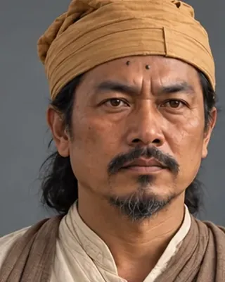

1667
অতন বুঢ়াগোহাঁই
Burhagohain 1662–1679 · Burhagohain and Prime Minister

Appointed Burhagohain in January 1662 while Mir Jumla held Garhgaon. Negotiated the Treaty of Ghilajharighat, commanded the northern division at Saraighat and twice declined the crown. Murdered in 1679 by men of Laluk Sola Borphukan.
Served under eight kings.
Record confidence: high.
1667

1669–1670

1675

1675

1676

1677

1677